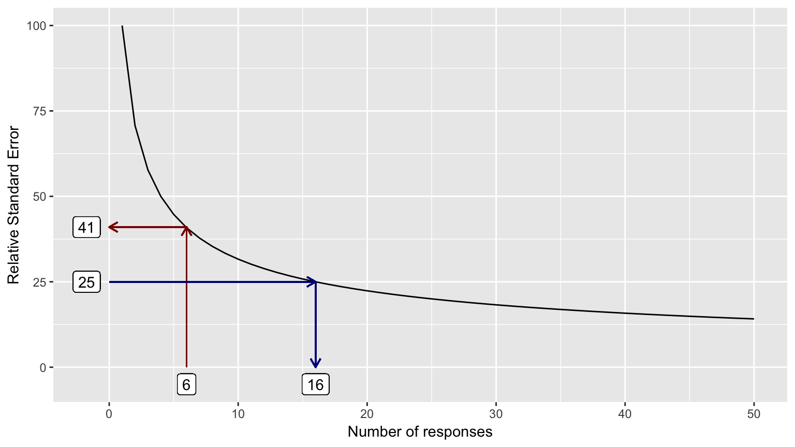

Chapter 4 Tips and Tricks
4.1 Neutral scores matter
You might have noticed in some surveys that there is often no “neutral” or “undecided” category included in the middle of the scale, e.g., what’s usually a 3 on a 5-point Likert scale. Sometimes it is placed at the end of the scale, and sometimes it is eliminated entirely. The reason for this is that those terms can sometimes be interpreted in a variety of ways; for example, with a question such as “My pay is fair compared with other companies”, a Neutral response could indicate “I’m neutral on this”, “yes, I guess so”, “I don’t know”, “it’s neither fair nor unfair”, “I don’t want to answer”, “I’m not sure what ‘fair’ means”, and any number of ideas that don’t necessarily indicate a true neutral opinion.
When a question has a response option where this type of ambiguity exists, a mean value will tend toward the that option because of this bias, unless of course the mean is already at that value. However, when Neutral is marked as 3, and when valid responses tend towards 4s and 5s, these ambiguous responses will drag down the average (and vice versa for responses heavy with 1s and 2s). Of course, you shouldn’t use means anyway, as we’ve seen above, but many reports do—so understanding this effect is important toward interpreting the results in a useful way.
Use of a median is somewhat resistant to this problem, though you still won’t know whether the middle values are valid responses or accidents of interpretation.
When you see an “undecided” or “N/A” response placed at the end of the scale or missing entirely, it is usually (but not always!) a sign that the survey creator understands this problem.
Sometimes, of course, Neutral can be a completely reasonable and unambiguous response to a question. Context matters; while it’s easiest for survey creators and scanning software to use the same scale for large numbers of questions, it is important that the analyst understand the extent to which Neutral and similar types of responses are a valid part of the measurement scale for each question.
4.2 How many respondents are enough?
It’s common to think: “We surveyed everyone in this department, therefore the results we see must be correct.” However, how people responded to surveys depends on many factors—such as mood the date the survey is taken, recent events in life and in work, changes in organizational structure, and any number of other factors—and many internal surveys are given only once a year. Thus, survey results are really a sample of attitudes and opinions, subject to random events and natural fluctuations.
Typical practice at some companies is to expose summary results for groups with six or more people. While this helps preserve some anonymity, it does not include enough responses to ensure the overall response is stable. Comparisons over time or across groups that are not based on stable results can lead to conclusions about differences that may or may not reflect reality.
In this context, stable means that the data accurately represent true changes (or lack of change) in the question at hand. It’s basically impossible to distinguish natural variation from real change when you have small numbers of respondents. As a result, the National Center for Health Statistics, for example, does not publish results with less than 20 distinct cases or responses.
The relative standard error (RSE) is the metric used to evaluate whether you have enough values for the results to be stable. The standard error is an estimate of the likely difference between the results and the true value (which in surveys, even of complete populations, can’t be known exactly due to the reasons mentioned above). The relative standard error is the standard error expressed as a percent of the measure or number of responses, which is a constant function: \(\frac{1}{\sqrt{responses}} * 100\). This function can be seen in the graph on the next page.
Generally, you want RSE values less than 20-25% to have some confidence that your results are stable.
Figure 4. The RSE-response count function. The RSE associated with the use of 6 responses is marked with dark red, and the response count associated with an RSE of 25% is marked with dark blue.
